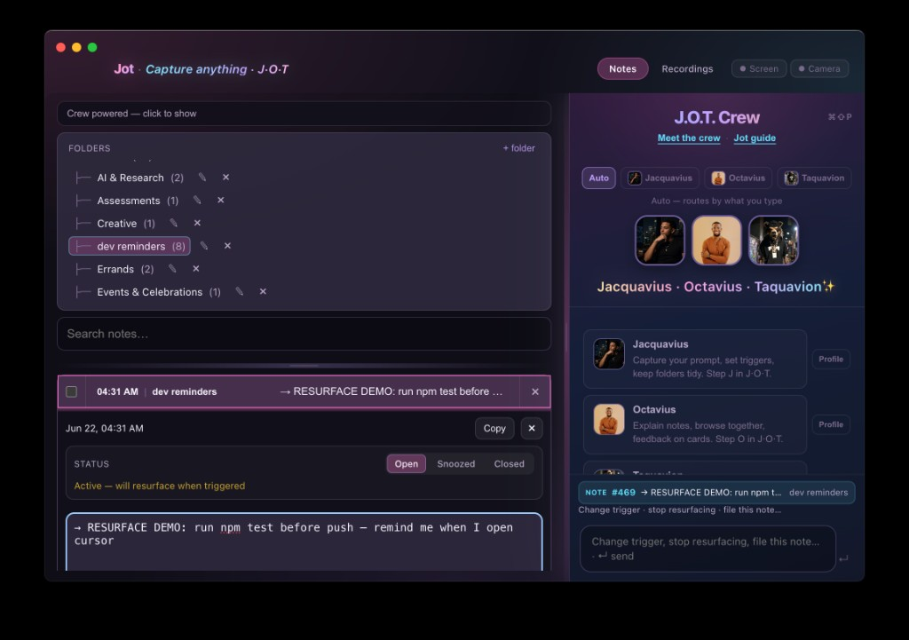
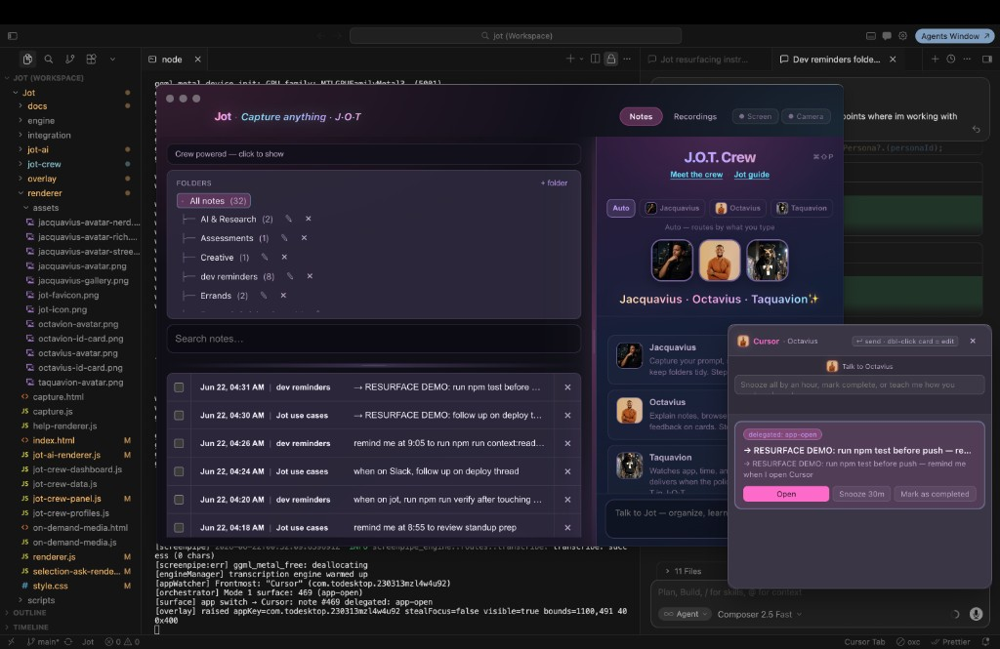

Local-first · macOS · AI reminders
Say when in plain language. Jot resurfaces one calm card when screen context matches — time, visible text, app, site, and more. Not calendar noise. Not “which window is frontmost.” The right moment.
No account · your Mac only · new context triggers ship often
Capture once. When context matches, Taquavion surfaces one card; Octavius is on it to snooze, complete, or chat. Triggers include time, on-screen text, app, site — and we're adding more constantly.


Jacquavius organizes your when. Octavius helps you interact. Taquavion + the policy deliver — local, deterministic, silence by default.
Capture prompts, file notes, set triggers.
Explain, browse, chat on resurfaced cards.
Watch context; surface one card when it matches.
Text, screenshot, or delegated when — time, screen phrase, app, site.
Resurface when what you're doing matches — not just a clock or frontmost app.
Policy caps noise. Manual recall anytime. Why-now chips when Taquavion delivers.
No account. OCR screen memory. Crew chat ⌘⇧P. Find notes ⌘P.